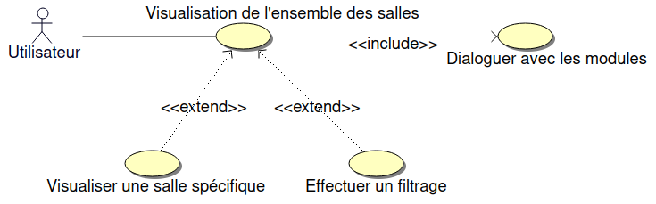
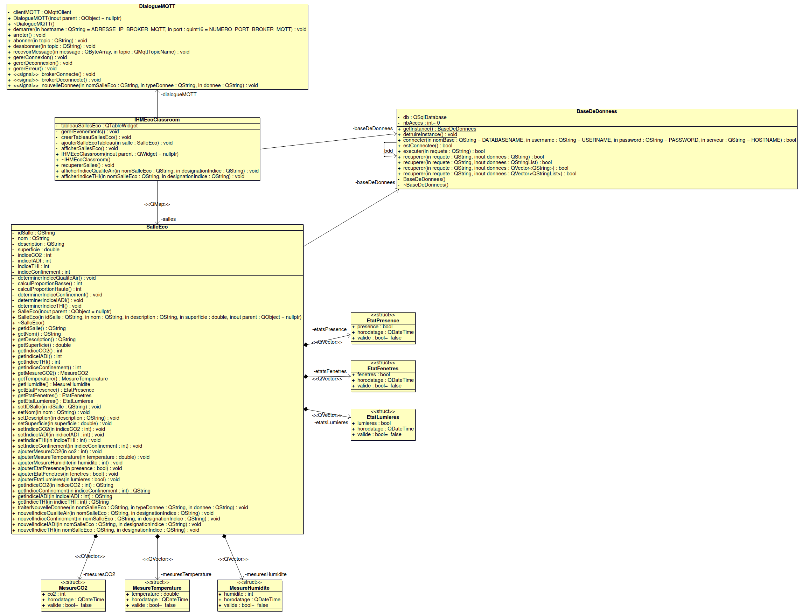
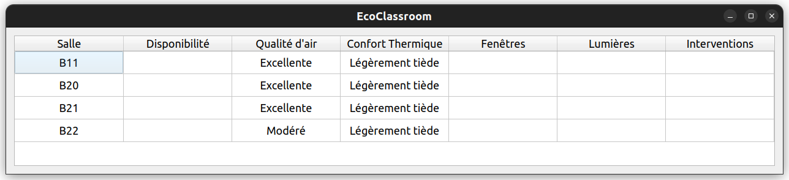
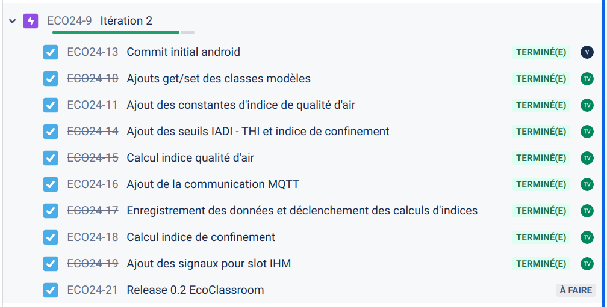
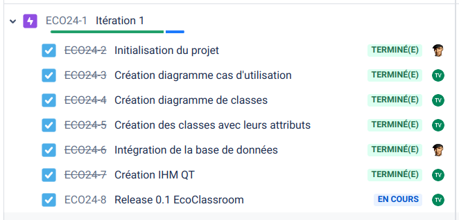

|
eco-classroom
1.0
BTS SNIR LaSalle Avignon 2024
|
|
eco-classroom
1.0
BTS SNIR LaSalle Avignon 2024
|


Le système assure une supervision de salles dans un établissement scolaire. Chaque salle sera équipée de deux modules connectés afin de détecter et mesurer l’état de celle-ci.
Les informations seront accessibles à partir d’une tablette ou d’une application PC permettant aux personnels d’assurer un suivi et d’intervenir en conséquence.

https://btssn-lasalle-84.github.io/eco-classroom-2024/

Le protocole MQTT fonctionne sous forme d’abonnement (suscribe) à un topic entre un client et un serveur.
Ici, le client MQTT est l’application Qt.
Le serveur MQTT est le broker MQTT de la passerelle qui reçoit les publications (publish) des publieurs (publishers).
Les publieurs (publishers) sont les modules sonde et détection.
L'application EcoClassroom-desktop (C++/Qt), donc le client MQTT, est abonné à un topic qui est le suivant : salles/#
Le # signifie un abonnement au topic en multi-sujet. C'est-à-dire que tous les publish transmis par les publishers comportant une racine /salles seront envoyés à leurs abonnés.
Les données des modules sonde et détection sont publiées sur un topic qui a la structure suivante : salles/nom/module/type
nom indique le nom de la salle, par exemple : B20, B11, …module peut prendre les valeurs suivantes : sonde|detectiontype peut prendre les valeurs suivantes : temperature|humidite|co2|fenetres|lumieres|disponibiliteExemple : La donnée 20.5 associée au topic salles/B20/sonde/temperature sera une température en Celsius publiée par le module sonde de la salle B20.



| Fonctionnalités | Oui | Non |
|---|---|---|
| Affichage IHM principale | X | |
| Récuperer l'ensemble des salles | X | |
| Calcul des indices | X | |
| Afficher les indices | X | |
| Dialoguer avec les modules | X | |
| Afficher une salle | X | |
| Filtrer les salles | X | |
| Editer une salle | X |
©️ LaSalle Avignon 2024